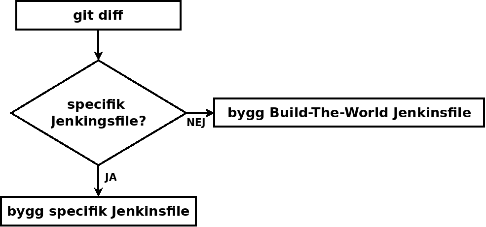

Monorepo
med Git
og Maven
- hvordan lære gamle hunder nye triks
 Anders Gjendem, Jonas Nordstrand
Anders Gjendem, Jonas Nordstrand

Agenda
- Dilemmaet med felleskode
- Møt Monorepo
- Vår reise fra multi- til monorepo
- Utfordringar
- Effekter
Felleskode
– a mixed blessing
Dem Femth Monorepo Bud
etter Google sitt evangelium
1.
The codebase is contained in a single repo encompassing multiple projects
.
├── apps
│ ├── app1
│ │ ├── pom.xml
│ │ └── src
│ ├── app2
│ │ ├── pom.xml
│ │ └── src
│ └── pom.xml
├── libs
│ ├── lib1
│ │ ├── pom.xml
│ │ └── src
│ ├── lib2
│ │ ├── pom.xml
│ │ └── src
│ └── pom.xml
├── pom.xml
├── README.md
2.
The development process is trunkbased; engineers commit to the head of the repo
3.
Code is viewable and searchable by all engineers in the organization
$ git grep lib1 -- '**/pom.xml'
apps/app1/pom.xml: <groupId>no.monorepo.libs.lib1</groupId>
apps/app1/pom.xml: <artifactId>lib1</artifactId>
libs/lib1/pom.xml: <groupId>no.monorepo.libs.lib1</groupId>
libs/lib1/pom.xml: <artifactId>lib1</artifactId>
libs/pom.xml: <module>lib1</module>
4.
Any project in the repo can be built only from dependencies also checked into the repo. Dependencies are unversioned; projects must use whatever version of their dependency is at the repo head.
5.
A shared set of tooling governs how engineers interact with the code, including building, testing, browsing, and reviewing code.
Vår reise
- Monolit
- Multirepo
- Monorepo
.
├── apps
│ ├── app1
│ │ ├── pom.xml
│ │ └── src
│ ├── app2
│ │ ├── pom.xml
│ │ └── src
│ └── pom.xml
├── libs
│ ├── lib1
│ │ ├── pom.xml
│ │ └── src
│ ├── lib2
│ │ ├── pom.xml
│ │ └── src
│ └── pom.xml
├── pom.xml
├── README.md


$ mvn clean install
[INFO] Scanning for projects...
[INFO] ----------------------------------------------------
[INFO] Reactor Build Order:
[INFO]
[INFO] root [pom]
[INFO] libs [pom]
[INFO] lib2 [jar]
[INFO] lib1 [jar]
[INFO] apps [pom]
[INFO] app1 [jar]
[INFO] app2 [jar]
[INFO]
$ apps/app1 $ mvn clean install
[INFO] Scanning for projects...
[INFO]
[INFO] --------------------------< no.monorepo:app1 >------
[INFO] Building app1 1.0.0-SNAPSHOT
[INFO] --------------------------------[ jar ]-------------
apps/app1 $ mvn -f ../.. -pl :app1 -am clean install
[INFO] Scanning for projects...
[INFO] ----------------------------------------------------
[INFO] Reactor Build Order:
[INFO]
[INFO] root [pom]
[INFO] libs [pom]
[INFO] lib2 [jar]
[INFO] lib1 [jar]
[INFO] apps [pom]
[INFO] app1 [jar]
[INFO]
Mavenutfordringer med GAV-koordinater
- groupId - bør utledes fra katalogstruktur
- version - bør utledes fra versjonskontroll
filsti == groupId
libs/lib1 ⇒ no.monorepo.libs.lib1
apps/app2 ⇒ no.monorepo.apps.app2
Versjonering i Maven
<project>
<groupId>no.monorepo.libs</groupId>
<artifactId>lib1</artifactId>
<version>1.0.0-SNAPSHOT</version>
CI-vennlig versjonering
<project>
<groupId>no.monorepo.libs</groupId>
<artifactId>lib1</artifactId>
<version>${revision}</version>
<properties>
<revision>1.0-SNAPSHOT</revision>
</properties>
$ mvn -Drevision=$(git rev-parse HEAD) clean install
Flate pom-filer
<dependencies>
<dependency>
<groupId>no.monorepo.libs.lib1</groupId>
<artifactId>lib1</artifactId>
<version>${project.version}</version>
</dependency>
CODEOWNERS
# Default owner
/ @nordstrand
# Code owner for the applications
/apps/app1/ @nordstrand
/apps/app2/ @agjendem

Jenkins(file)
$ git diff --name-only origin/master...HEAD
apps/app2/src/main/java/no/monorepo/app2/App2.java
apps/app2/README.md
Jenkins(file)
partial-build-plugin
Git sparse checkouts
.git/info/sparse-checkout
/*
!/apps/*/*
/apps/app1/*
<profile>
<id>app2</id>
<activation>
<file>
<exists>app2/pom.xml</exists>
</file>
</activation>
<modules>
<module>app2</module>
</modules>
</profile>
Rosa sky eller tornekratt?
- Stort repo
- Lange byggtider
- The race to merge
- Monolit 2.0
- Verktøy
Stort repo
- .git/
- VFS for Git
- work tree
- Sparse Checkouts
- Large File Storage
- Google's monorepo: 2 milliarder filer, 2018
- Microsoft Windowsrepoet: 3.5 millioner filer / 4000 brukere (som GVFS)
- Linuxkernelen: 65.000 filer
- Summan av SpareBank 1s nettbankmultirepoer: 40.000 filer
- SpareBank 1s nettbankmonorepo: 1.500 filer
Lange byggtider
- Ikke bygg alt alltid
- Ikke bygg fra "clean" alltid (vurder alternativ til Maven)
- Bazel har støtte for build cache og build workers
The race to merge
Monolit 2.0
Overmodne verktøy

Umodne verktøy
- Bazel er i beta og har middels verktøystøtte
- CI - mangler ferdige løsninger for å bygge deler av monorepo
- Bitbucket/Github mangler ordentlig støtte for store monorepo - CODEOWNERS er et plaster
... men
- .. dette er jo ikke et ekte monorepo!
- .. monorepo er latterlig, ikke gjør det!
- .. dere støtter jo bare ett språk!
- .. dere har jo bare noen få applikasjoner i repoet!
- .. definisjonen er jo at alt av kode skal bo i ett repo!
- .. monorepo skalerer ikke
- .. monorepo er en <flopp|hype>
- .. andre innspill?
Effekter
Versjonering
$ mvn version set $ mvn release:begin <version> -SNAPSHOT <dependencyManagement>Jobbing med felleskode
Hvis du ikke har et monorepo, integrerer du ikke kontinuerlig - i beste fall hyppig!
Second order effects
i SpareBank 1 Utveckling
Googles erfaringar
Advantages and Disadvantages of a Monolithic Repository:
A case study at Google
Ciera Jaspan, Matthew Jorde, Andrea Knight, Caitlin Sadowski, Edward K. Smith, Collin Winter-Google;
Emerson Murphy-Hill NC State University
Du får det till med Maven, Jenkins og Git!
...men på sikt ryker nok Maven!
Takk for oss!
github.com/SpareBank1/monorepo-sample